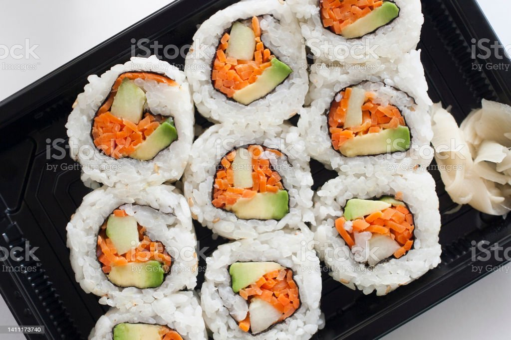

Sushi

A vegetarian sushi dish
In order to get the best taste,only the fresh vegetable should be used.
It is best suited for vegetarian.
Ingredients
- Cucumber
- Carrot
- Rice
- Nori sheets
- Avocado
Steps
- Prepare the rice and nori
- Spread the rice on the nori
- Add the ingredients to the bottom quarter of the nori
- Roll the sushi
- Move to cutting board
- Cut the sushi
- Serve